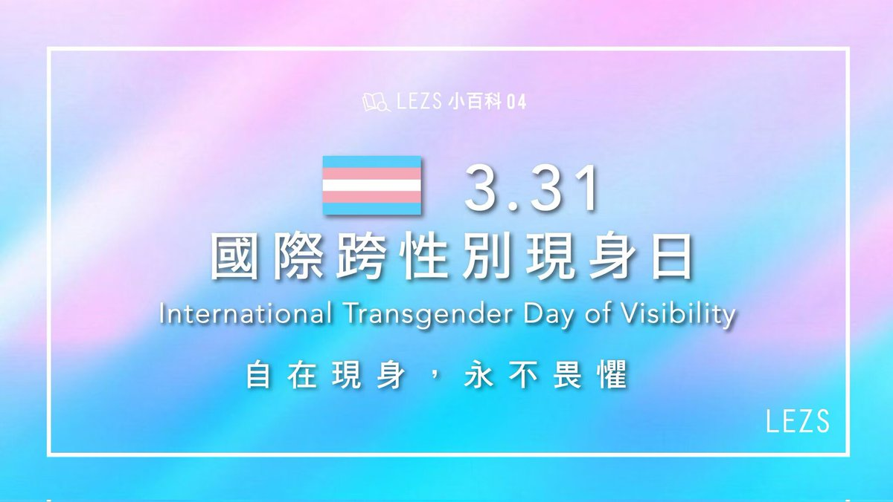

妃宫千早
@neko0202002
RT @lianshufa: 每年3月31日是跨性别现身日。
社会学家与心理学家指出，跨性别者长期面临严重的身份认同困境与社会污名化，因歧视、暴力与自我认同冲突而导致的抑郁与自杀率远高于平均水平。为了提升公众对这一群体的尊重与理解，自2009年起，将这一天定为国际跨性别现身日。…

lsf
@lianshufa
每年3月31日是跨性别现身日。
社会学家与心理学家指出，跨性别者长期面临严重的身份认同困境与社会污名化，因歧视、暴力与自我认同冲突而导致的抑郁与自杀率远高于平均水平。为了提升公众对这一群体的尊重与理解，自2009年起，将这一天定为国际跨性别现身日。
「我们活着，就是对恶意的最大反抗！」 https://t.co/rg3BIBZUlh